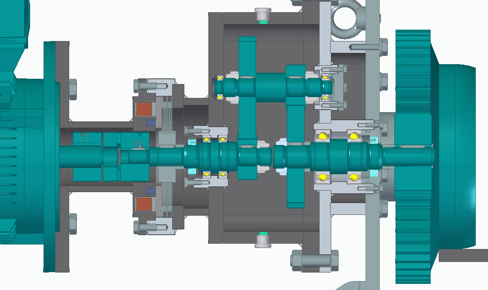

Gearbox Design
This project presents the mechanical design of a gearbox for a rail-mounted trolley drive. The assembly integrates the motor, shafts, gears, bearings, housing, and driven wheel into a compact transmission system.
System Overview

The complete assembly shows how the gearbox connects the electric motor to the trolley wheel, together with the supporting frame and shaft arrangement.
Torque Transmission

The sectional view reveals the internal gear stages and the torque path from the input shaft to the output gear.